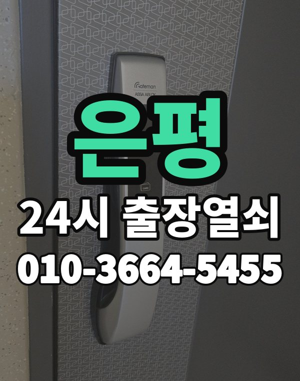

은평 출장 다니며 보는 동네
은평구는 진관동 은평뉴타운 아파트와 불광, 응암, 역촌동 빌라가 넓게 퍼져 있습니다.
새 아파트와 오래된 빌라의 도어락 종류가 크게 달라 사진을 보내주시면 좋습니다.

은평구 출장 가는 동네
- 불광동
- 녹번동
- 응암동
- 역촌동
- 신사동
- 증산동
- 수색동
- 진관동
- 갈현동
- 구산동
- 대조동
불광동 출장열쇠, 녹번동 열쇠집처럼 동네 이름으로 찾으셨어도 같은 곳입니다.
적혀 있지 않은 동네도 은평구 안이면 다 갑니다.
은평에서 하는 일
은평에서 전화 주실 때
진관동 쪽은 도착 경로가 길 수 있어 위치를 받으면 예상 도착 시간을 같이 말씀드립니다.
늦은 시간에도 출동합니다.
연신내역, 불광역, 구파발역, 응암역 근처라고 말씀해 주셔도 위치 잡기가 쉬워집니다.
가까운 역이나 큰 건물, 단지 이름을 같이 알려주세요.
- 주소와 건물 이름 (아파트면 동, 호수)
- 문 종류, 번호판이 켜지는지
- 사시는 걸 확인할 신분증이나 우편물이 있는지
전화부터 작업까지 순서는 이용안내에 적어 두었습니다.
은평 출장열쇠 자주 묻는 질문
은평구 끝쪽 동네도 오시나요?
불광동, 녹번동, 응암동, 역촌동, 신사동, 증산동 등 은평구 전 지역 갑니다. 적혀 있지 않은 동네도 은평구 안이면 출동합니다.
은평에서 밤늦게나 새벽에도 오시나요?
시간 상관없이 출동합니다. 주소를 받으면 도착 시간부터 알려드립니다.
문을 못 열면 비용을 내나요?
열지 못하면 비용은 없습니다. 작업 전에 금액을 듣고 정하시면 됩니다.
본인 확인은 어떻게 하나요?
사시는 분이 맞는지만 확인되면 됩니다. 신분증이나 우편물을 준비해 주세요.
은평 도어락 새로 다는 것도 되나요?
네, 수리와 설치, 교체 모두 합니다. 고쳐서 쓸 수 있으면 고치는 쪽을 먼저 말씀드립니다.